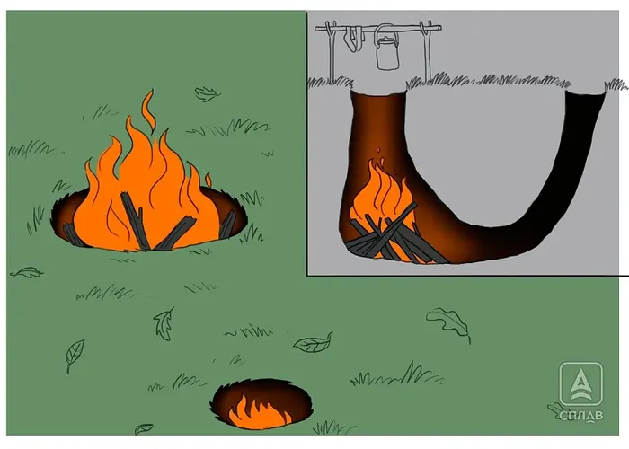

Костёр в яме (дакотский очаг)
По сути — печь, вырытая в земле, с костром внутри неё. Известен также как дакотский очаг или полинезийский костёр. Очень удобен для готовки, почти незаметен со стороны, не рассеивает тепло по сторонам, поэтому рядом с ним можно спокойно сушить вещи, не боясь их сжечь. Главный минус — почти не даёт освещения, а без лопаты такой костёр не выкопать.
- Выберите место на небольшом пригорке и выройте яму под сам костёр так, чтобы он полностью помещался в углублении.
- Прокопайте от неё туннель для притока воздуха — его диаметр должен быть не меньше трети диаметра основной ямы.
- Разожгите костёр внутри основной ямы обычным способом (например, растопку шалашом).
- При готовке следите, чтобы посуда не перекрывала полностью выходное отверстие — иначе пропадёт тяга и костёр начнёт гаснуть.
